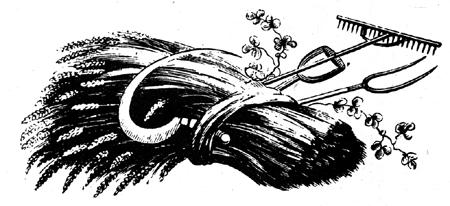

Ah, the vicissitudes of time. Two years ago, when there were NO currently relevant small-scale-farming introductory handbooks available, many of us welcomed the publication of Richard Langer's Grow !t! with open arms. Now that we're all older and more experienced, however, some folks find it increasingly easy to criticize that breakthrough beginner's guide (see the Feedback sections of MOTHER NOS. 23, 24 and 25).
Which brings us to another breakthrough book that is just as important (probably more so) now as Grow !t! was two years ago and which may well come up for its share of criticism in another 24 months or so. Be that as it may, John and Sally Deymour's record of 18 successful years on a shirttail-sized homestead in England is important now and should offer welcome encouragement to today's back-to-the-landers both real and imaginary. I started serializing the book in my No. 25 issue and I'm sure that many readers will want a personal copy for their home libraries.-MOTHER.
BARLEY, BEER I view the tea drinking as a destroyer of health,
an enfeebler of the frame, an engenderer of effeminacy and
laziness, a debaucher of youth and maker of misery for
Oki oar.
WILLIAM COBBETT: Cottage Economy
Arid nowadays we get people worrying themselves about a little pot. But whether we agree with Cobbett about the evils of tea or not (he thought the clatter of the tea tackle was the short road to the brothel and the gallows!) we must agree with him as to the wholesomeness of good beer brewed from good malt, made from good barley, flavoured with good hops, and fermented with good yeast. What could be more 'natural' than that?
And so to grow the good barley-the basis of it all. Barley is traditionally grown after the root break, and in the days of High Farming after roots had been fed off to folded sheep, and the latter had trodden the ground and enriched it with their manure. On the light lands of Norfolk the effect of sheep used thus was termed the 'Golden Hoof'. The very finest malting barley, however, is that grown after another white straw crop, when the ground is not too rich in nitrogen, and the barley therefore richer in starch and not so rich in protein, for it is the starch content that makes the beer. Barley will grow well on much lighter land than wheat demands, and in wetter climates. It is much faster growing than wheat and I have seen barley sown in May in England give a good crop. You can, in England, grow winter, barley in the same way as winter wheat; but most barley is spring-sown: usually in February or March. The preparation of the land is much the same as for wheat, except that the tilth should be much finer and the last ploughing not too deep: four inches is enough. If you drill it you need two to three bushels to the acre (one to one and a half hundredweight); if you broadcast it about a bushel more. Very often you will probably undersow the barley with 'seeds' (grass and clover seed) for a subsequent ley. After sowing it must be harrowed of course, and rolling helps. If the land is very rich in nitrogen a dressing of phosphate and potash will counterbalance this, make for earlier ripening, and give a better 'malting sample'. If the land is poor add to this a hundredweight to the acre of nitrogen, if you can afford it and have no ideological objections. But the organic farmer will say to this: well, the land shouldn't be poor.
Harvesting can be just the same as for wheat in every respect. For a malting sample do not harvest until the grain is dead ripe the ears all falling over. The traditional way to harvest fine barley was to cut it with a scythe and not tie it, but 'make' it like hay. That is rake it up into swatches, turn it by rake or pitchfork until both straw and grain are bone dry, then cock it like hay, cart it to the stack and stack it, and thresh it out in the winter when there is nothing else to do. I think for the smallholder this is a very good way of harvesting barley.
A word here about the 'barley mow'. There is many a pub up and down the land of England of that name, and very often the landlord, even, does not know what it means. In the wetter parts of the country today, and at one time all over the country, much corn was put into 'mows' after it had stood for a week or two drying in the stook. We harvest our barley and bats in this manner in Pembrokeshire now. As soon as you get a dry spell, after the corn has been stooked for long enough to turn the grass that clings to the roots of the sheaves into hay, you stack the sheaves in the field in little stacks which are known as 'mows'. You do it like this: make a circle of sheaves standing upright and leaning against each other. The diameter of the circle should be fixed by the length of the sheaves, but after you have made one mow you will see how big the circle should be. If the sheaves have been tied by a binder it takes about fifty of the little sheaves to make the circle. For stability the outer rings of the circle should lean inwards (of course). On top, in the middle, lay a ring of sheaves ears together in the middle and butts outward. Secure each sheaf to the next by grabbing a handful of its straw and stuffing it under the string, or band, of its neighbour. You are left with a ring of sheaves each one tied securely to the next. Place another ring on top of this one, but bigger, also secured in the same way. Work, in fact, in a spiral. Arrange it so that the outer sheaves are lying on a steep slant because the middle of the heap is much higher than the outside. The reason for this is of course to shed the rain. Then continue your spiral upwards, reducing your diameter until you come to a point. This point will consist of say five sheaves with their ears blowing up in the air. The whole mass will be tied together sheaf to sheaf and completely rainproof, and yet the wind can get through it. When you have got your corn in the mow you can heave along sigh of relief, because you need have no further anxiety about it. You can leave it there nearly until Christmas if you want to, but probably before the terrible gales of January and February set in you should have carted it away to the rick or the barn. The mow is very weatherproof but not quite gale-proof as the proper corn-rick is.
Threshing, winnowing and all the rest of it are the same as for wheat. For feeding, barley can be ground, in which case it is unsurpassed pig food, or cattle-fattening food. It should not be fed to horses as it is too 'heating', and fed only in moderation to sheep. If you haven't got a mill it is just as good to soak your barley: dump it in water for at least twenty-four hours. It then makes a most excellent stock feed: quite as good as barley meal.
Barley meal can be baked into bread, and in fact used to be extensively in the western parts of Britain where barley is easier to grow than wheat. Never having tasted it I cannot comment on it, but folk-lore gives it a pretty bad name:
I'll eat no more of your barley bread Nor drink no more of your water, I'll sleep no more in your flea-ridden bed Nor court your pudding-faced daughter! sang the 'living-in' farm hand to his parsimonious master. Mixed with wheat flour it is said to be not so bad. The fact is that the barley grain differs from the grain of the wheat in that the protein of barley is soluble in water while that of wheat (gluten) is not. It is the insoluble gluten of wheat that makes the dough 'rise': in other words entraps the carbon dioxide given off by the yeast.
But barley has, thank God, one noble use to which it can be put, and that is the making of beer.
Alcohol is made by permitting the yeast organism to feed upon sugar, whereupon it excretes carbon dioxide and alcohol. The yeast needs more than just sugar for its life, just as we, we are told, cannot live by bread alone. Now the grain of the barley is mostly starch, but before the barley can grow this starch must be turned by chemicals called enzymes into sugar. The malster and brewer take the starch of barley, turn it into sugar, and then 'ferment' this sugar (as eating it with yeast is called) into alcohol. The way the malster turns the starch into sugar is simply by encouraging the grain to grow. This he does by keeping it wet and warm. When it has grown to the optimum stage, i.e., when the enzymes have already converted most of the starch into sugar and are ready to convert the rest but before the sugar has been turned into plant tissue, he stops the process of growing by roasting the grain. He then has a grain that looks very like an ordinary grain of barley but which is in fact composed more of sugar (maltose, which is a particular form of sugar) than of starch. This grain is called malt. He cracks the malt, so as to make the sugar available.
In practice what you do is dump your barley into warm water and soak it for four days. Drain the water off and keep the wet grain on a floor at between 63° F to 86° F (17° C to 30° C), turning it from time to time to keep it at the right temperature. Turning cools it. Keep it moist, occasionally sprinkling it with warm water. After about ten days of this the acrospire as the shoot of the grain is called (the shoot which intends to grow up into the air-not the root), should be about two thirds of the length of the grain. The acrospire grows under the skin of the grain, but you can see it easily. When this has happened you must 'kill' the malt, and commercially this is done in a kiln. With small quantities you can more easily do it in the oven. If you want to brew a lager or fairly pale ale keep the temperature of your oven down to under 120° F (about 50° C). When the grain is quite dry, and brittle between the teeth, raise the temperature a little for a quarter of an hour but to no more than 140° F (60° C) whatever you do or you will 'kill' not only the malt but also the subtle enzymes within it which are going to go on converting more of your starch into sugar. If you want to brew a dark beer you can roast the malt until it is brown, but I would advise against this. If you must have a dark beer burn a bit of sugar and put it in your beer: it will do no harm if it does no good.
If you are malting more than a bushel or two the oven will be too laborious, and you will need to make a kiln. This can be quite simply a perforated iron plate (the perforations being too small to let the grain drop through) placed over a fire. A coke fire is the best, and the malt must be turned continuously with a shovel while it is being kilned. Great care is needed to dry it properly without overheating it, and there is nothing, for this, to take the place of Old Mother Common Sense. You must keep looking of the grain, and biting.. an occasional one, and decide for yourself when the grain has that brittleness of complete dryness, and wholeness roasted malty smell of good malt, and then stop. Of course if you didn't 'kill' the malt it would go on growing and waste all its sweetness in growth and be no good at all. Above all kind gently. Never get it too hot: never above 140° F.
In a commercial maltings (which the malting activity of a large community will more- closely resemble) this is the sequence:
1. Steep the barley for 60 hours or more: up to four days.
2. Drain and put on the malting floor in a 'couch'. This is a high steep-sided heap.
3. Leave for 12 hours if it heats quickly-48 if it heats slowly. The grain should heat to a pleasantly warm temperature when you shove your hand in.
4. As soon as the barley has 'chitted' (that means when the root has just burst out of the skin) break the couch. That is shovel the barley out into a flat layer about five inches deep.
5. Now comes the flooring. You must watch the barley continually to see that it keeps warm enough but does not get too hot. It heats spontaneously. When it gets too cold pile it up in a thicker layer. When too licit spread it out thinner. Use a wooden shovel and wooden rakes and work barefoot among it so as not to crack the grains. 'Freshen' occasionally by sprinkling with water. The temperature must stay between 60° and 62° F (about 16° C).
6. After about ten days (i.e., when the acrospire is two thirds the length of the grain) couch it again for twelve hours, and hope to get it up to 68° F (20° C). The rise in temperature is, of course, spontaneous. You now have 'green malt'.
7. Kiln the green malt as described above: not above 140° F.
You store your malt in the whole grain form, but before you use it you must crack it. This you can do with any mechanical device from a rolling pin to a cracking mill. A coffee grinder will do. Do not grind it to powder though just crack it.
This is the principle of the operation:
Put your malt into a tun, mash-tub, or kive or whatever they call it down your way-a big open-topped barrel (many poor people nowadays have to make do with plastic dustbins) and mix it into a mash with water that has been boiled and cooled to about 1 S'0° to 1 55 F (66° to 68° C). Old people say you can tell the temperature by looking into your copper-and when the water has cooled enough so that you can see your face reflected in the water it will do (but I prefer a thermometer). Mix it up into a thick mash, such as you might feed to the pigs. Cover it over and leave it all night. In the morning run the liquor (called wort in England; spree in Wales) out of the bottom of the kive, at the same time sparging-that is sprinkling more boiling water on top of the drying mash. This sparging water can be boiling-it doesn't matter now. Before it did matter-boiling water would have killed the enzymes-that's why you had to be able to see your face in it. Now the enzymes have done their work.
When you have as much wort as you think you ought to have from the quantity you used of malt (we will deal with this later) stop sparging and let the mash drain dry.
Put your wort back in the copper and boil it together with as much hops as you think you need wrapped up in a cloth. You should strain the wort into the copper through a muslin, for any bits that get in will stick to the bottom of the copper and be hell to get off, besides tainting the beer. If you wish to add sugar to give extra strength (cheating really) now is the time to do it. Boil for an hour.
Put the wort back into your kive (or another vessel if you have one) for fermentation. Now the faster it cools the better.
In the old days people used to run it into large shallow pans to cool it quickly. Modern breweries use refrigeration. We just let it cool by itself, which is all right in the winter but I think a bit risky in the summer. It is during this cooling process that the wort may be attacked by enemy organisms which will beat your yeast and turn it nasty. I am making, this very day, a copper 'worm': a spiral of copper tubing which I intend to lower into my wort and run cold water through, like the 'in-churn coolers' dairy farmers used to use. But, up to now we have been brewing for six years and have only had one bad brew. But still, one is too many: it must be cooled quickly.
While the wort is cooling you should be breeding your yeast. You do this by taking some of the hot wort (a jug-full), cooling it very quickly by standing it in cold water; dropping in a handful of yeast, and letting it stand in the warm. By the time the main body of wort has cooled to 60° F (or about blood heat-we use common sense not thermometers) dump your jug-full of breeding yeast in it.
To simplify these instructions I will describe exactly what we do to make from eight to ten gallons of beer.
1. In the evening, before we go to bed, we boil ten gallons of water in a ten-gallon electric copper. We used to use an oldfashioned copper heated with a stick fire and it was a darned sight quicker. Now we haven't got one, or we would use it again.
2. While the water is boiling I make a strainer for the kive. Our kive is a big open-topped tub with a hole in the side near the bottom in which fits a cock. A cock in this context is a wooden tap, or spigot. Obviously there has to be a strainer to let the wort run out of the cock without letting the mash get in and bung it up. The way we make the strainer is this. We cut a bunch of gorse, tie a string round it, put it inside the kive, poke the loose end of the string through the cock-hole and-holding the string tight outside-drive the cock in with a mallet. The pressure of the cock then holds the string tightand the bundle of gorse against the inner end of the cock. As this straining is very important I often put a layer of gorse all over the bottom of the kive and lay a muslin over this also.
A better way of doing this straining is not to have a cock at all, but drill a hole in the middle of the bottom of your kive. Push a long stick down from the top so that the end of it goes in this hole and bungs it up. Now, if you pull the ash stick out you will open the hole. But push the ash stick in, put a layer of gorse around it on the bottom of the kive, put a layer of clean straw on top of the gorse, and lower a big flat stone with a hole in the middle over the ash stick so that it rests on the straw, and compresses it, and turns it into a first-class strainer.
3. We 'let the water boil, and then let it cool until it is 1 SOO F, or until we can see our face reflected in the water in the copper. We then mix the water and one bushel of cracked malt into the kive, making sure that the malt is thoroughly wet right through.
4. We go to bed.
5. We get up and start draining the wort as the liquid is now called into buckets (traditionally the vessel that you drain into should be wood and is called an underbuck). In our case we open the cock to do this; in the case of the ash stick users they loosen the ash stick-and of course the kive is held up on something so they can get their underbuck underneath it.
6. While this is happening we pour kettle after kettle of boiling water on top of the malt (this is what is called sparging). We go on doing this until ten gallons of wort have drained out. The original ten gallons of water we put in has been reduced somewhat by natural causes.
7. We put the ten gallons of wort in the copper again, put a pound of hops in a pillowcase, and boil for an hour. If we
wish to cheat and use sugar we stir it in at this juncture-either six pounds of sugar or, as we always do nowadays, half a 14 Ib. tin of malt extract, which is simply maltose, or sugar of malt. Last time I used a whole tin of malt extract and made 20 gallons of beer with a bushel and a quarter of malt and the extract.
8. We transfer the boiling wort back to the kive which by now we have cleaned out. Now what we ought to do is to have another fermenting vat (a plastic dustbin would do) and put it in this, and then we would be able to make 'small beer' of the mash in the kive. Not having a spare kive however we just have to throw the mash out and wash the kive and use it again.
9. We take a jug-full of the wort and cool it by standing it in cold water.
10. When it is blood heat we plop some yeast into it-generally yeast which we have borrowed from a neighbour who brewed beer recently. Some neighbour will send a child to us for yeast in due course, for his beer, and thus the neighbourhood is knit together, in a friendly mesh of yeastborrowing, and the strain of living yeast with which we brew our beer may go back, in ancestry, to the brewers of Caractacus who knows?
11. When the main body of wort has cooled to blood heat we pour the jug of foaming yeasted wort into it-with a prayer. We cover it well with blankets to keep vinegar flies out. The generation of carbon dioxide inside the kive now is such that, so long as we keep the blankets over it, no vinegar fly could live.
12. Now all we have to do is to keep our hands off it. And here I might say that in our part of Pembrokeshire the 'Home Brew Belt'we farmers cannot keep our hands off it for very long. I have known us to be at it like dogs before the yeast has been in twelve hours. This practice is, of course, barbarous, and the stuff is far better left alone. It does not, however, as the uninitiated always suppose it does, make you ill.
We skim the floating yeast off after three days. If you leave it another day it will sink, which is bad. It is this floating yeast which our neighbours will send for to make their beer in due course. Kept cool (many people around here keep it in a screw-topped bottle in a stream) it will keep for a month or more.
After eight days we rack the beer (pour it) into a ninegallon barrel, and if we can keep it bunged up for a month or two it is absolutely superb. If we get eight gallons from a bushel of malt it is very strong indeed. Twelve gallons, which many people make, is strong enough. The stronger it is the better it will keep: eight gallons to a bushel beer would keep for a year easily. It should not be golloped down by the pint like pub beer it is far too good for that. To people not used to it it is dangerous: in spite of all warnings they are inclined to drink too much. For such people water it, they won't know the difference. Water it for the harvest field too, or you won't get much harvesting done.
Now to make ,small beer (which we have never done but will do) you pour say another ten gallons of boiling. water (yes you don't have to wait this time until you can see your face in it) on to the mash after you have taken your first lot of wort out of it, let it stand until you have finished boiling your first lot of wort, then run it off and boil it in the copper like the first wort with hops, put it back into the cleaned-out kive and ferment it with yeast in the usual way. It is said to be an excellent nourishing and slightly alcoholic drink (about the strength of pub beer), but, like pub beer, it won't keep long. It is good for the harvest field.
The mash, after you have used it, is very good stock food, and you can feed it to any animals you feel particularly kindly disposed towards.
This is beer, cider or wine which has been exposed to air. It is attacked by Aceto bacter, an organism which converts alcohol into acetic acid, thus: CZH5.OH+Oz=CH3.COOH+ H2O
The traditional way to make malt vinegar is to sprinkle beer on to the top of a big open funnel which is filled with birch twigs. The birch twigs have previously been impregnated with vinegar. The beer runs through the birch twigs and picks up the Aceto bacter in the presence of air and turns to vinegar. Strong vinegar contains 6.2 percent acetic acid and for pickling it must not be less than 5 percent. You will know if it doesn't because, exposed to the air, it will grow mould on it. It shouldn't. If beer or wine 'turns sour', turn it to good account by turning it into vinegar.
If you fill your copper with beer, float a basin on the beer, cover the copper with a big shallow dish of either copper or stainless steel or some clean metal (not galvanized), allow cold water to pour into the dish and trickle away over the lip of it, and light a fire under your copper, you will make moonshine. The alcohol will evaporate before the water of the beer does, it will condense on the cold underside of the shallow dish, run down to the lowest point of the dish, and drip off to be caught by your floating basin. Distilling is illegal in the realms of Her Britannic Majesty without a license, which is very difficult to obtain.
A word about gas. If you want your beer to be gassy, like pub beer, you must keep it in pressure proof containers. Screwtopped cider bottles are the usual things for this purpose, and don't blame me if one of them blows up and kills somebody. Personally I don't like your windy liquids, and believe that the cult of making gassy beer is deleterious. Most of the horrible liquid termed 'home brewed beer' that one has been subjected to by one's city dwelling friends is of this nature, and generally brewed, too, from 'malt extract' bought from the chemist. The makers, nurtured on the windy chemical liquid made by the giant brewing combines, cannot recognize beer as beer unless it is bubbling like soda-water, and so they mess about with their hydrometers, their dollops of sugar, their screw-topped bottles until they end up with an inferior imitation of bottled pub beer and it is horrible. Real beer, such as nurtured the Englishman and the Welshman in days of old, is a beautiful rich, slightly viscous, bitter, completely unwindy (yes'flat') liquid, akin to the ambrosia of the Gods.
|
 |
|
|